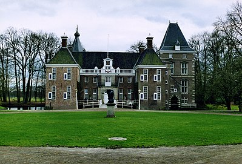
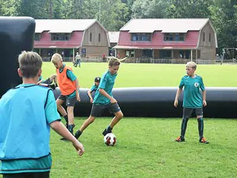

5 feitjes ver Heino
De eerste verwijzing naar Heino, in een oorkonde van de bisschop van Utrecht, dateert uit het jaar 1236. Hierin wordt de naam Van der Hayne genoemd, en er wordt gesproken over een buurtschap genaamd Ter Heyne.
Van een echt dorp is er pas sprake sinds de 17e eeuw. Sinds de Tweede Wereldoorlog is het dorp aanzienlijk uitgebreid.
Heino was een zelfstandige gemeente tot 1 januari 2001. In 2001 voegde de provincie Overijssel de gemeente Heino samen met de gemeente Raalte.
De voormalige gemeente Heino bestond uit de kernen Heino, Lierderholthuis en Laag Zuthem en had een totale oppervlakte van 36,23 km². Het voormalige gemeentewapen, met daarin een ploegijzer van zilver en drie klaverbladen in natuurlijke kleur, verwees naar het agrarische karakter van de gemeente.
Op 22 mei 1982 werd in het Gemeentehuis van Heino een akte van jumelage ondertekend met de Belgische gemeente Keerbergen. Deze zusterband werd stilzwijgend verbroken in 2001 toen Heino als zelfstandige gemeente ophield te bestaan.
Attracties in Heino

Nijenhuis
Het Nijenhuis is een landgoed met havezate gelegen tussen de plaatsen Wijhe en Heino in de Overijsselse streek Salland. Twee bouwhuizen flankeren het plein voor het kasteel. Gebouwen en omliggend parkbos zijn bij Museum de Fundatie in gebruik als tentoonstellingsruimte voor beeldende kunst. De havezate wordt in de archieven in 1382 voor het eerst vermeld. Het tegenwoordige kasteel stamt deels uit 1680. Verschillende bekende adellijke families waaronder telgen uit de geslachten Van Ittersum, Bentinck (Volkier Marius François Bentinck tot Nijenhuis werd hier geboren) en Van Pallandt bewoonden het. In 1870 werden door de toenmalige eigenaar Von Knobelsdorff twee grote woontorens toegevoegd. Nadat het huis in de twintigste eeuw in verval raakte kwam het in bezit van de provincie Overijssel. In de jaren vijftig vond een grote restauratie plaats. Museum Het huis werd van 1958 tot zijn dood in 1984 bewoond door kunstverzamelaar en voormalig directeur van museum Boijmans Van Beuningen Dirk Hannema. Hij liet een belangrijke collectie beeldende kunst na waarvan delen sinds 2004 in het Nijenhuis getoond worden aan het publiek. Bij het huis behoort ook een door Hannema begonnen beeldentuin waar vele kunstwerken zijn opgesteld. Beeldhouwer Ossip Zadkine maakte in 1929 de zonnewijzer in de vorm van een liefdespaar. Een ander belangrijk werk is een afgietsel van het beeld dat Charlotte van Pallandt in 1968 maakte van koningin Wilhelmina.

Werkkamp
In 1939 ging het kamp over naar de Rijksdienst voor de Werkverruiming. Onder toezicht van die dienst werd kamp Schaarshoek in februari 1942 een werkkamp voor Joden. De rol van joodswerkkamp was slechts kort van duur. In oktober 1942 (Jom Kipoer) werd het kamp opgeheven en werden de Joden naar Westerbork overgebracht. Na 1942 werd het kamp gebruikt om evacuees uit Den Haag en Scheveningen waarvan de woningen in verband met de aanleg van de Atlantikwall werden gesloopt onderdak te bieden. Na de bevrijding had het kamp vele functies. Zo was Schaarshoek na de Tweede Wereldoorlog een van de rijksevacuatiekampen voor oorlogsslachtoffers. Toewijzing vond plaats door het Bureau Afvoer Burgerbevolking. Selectie vond plaats op grond van "onmaatschappelijkheid", en het doel was heropvoeding. Ook verbleven in het kamp in de jaren vijftig repatrianten uit het voormalige Nederlands-Indië. In 1961 werden er vluchtelingen uit Oost-Duitsland gehuisvest tijdens de bouw van de Berlijnse Muur. In de jaren zestig is het kamp geleidelijk steeds meer ingericht als een jongerenkamp. Anno 2015 staat Schaarshoek bekend als vakantiekamp. De oorspronkelijke bebouwing is grotendeels verdwenen, maar de kantine staat er nog. Ook is de V-vorm van het voormalige werkkamp nog herkenbaar.